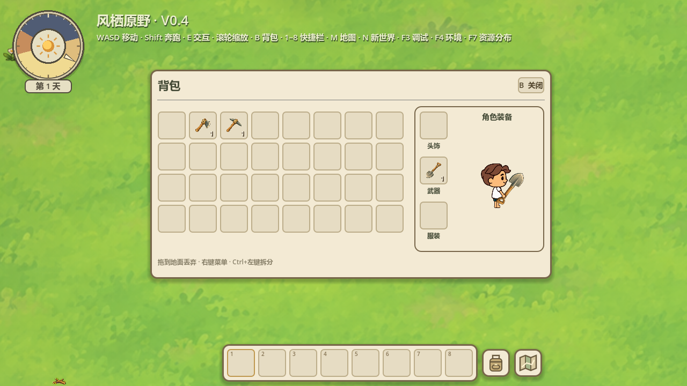
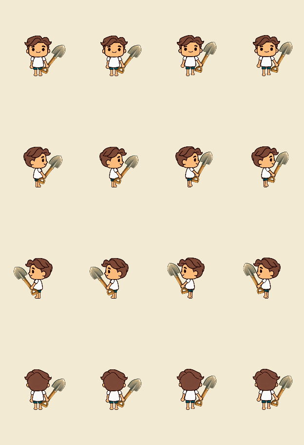

2026-10-17 · Godot 4.7.2 Stable / Compatibility / RTX5060。只修预览的绘制状态同步，没有修改场景角色、素材、动作、握点或存档。
原因：原动画会改变ArmR的show_behind_parent，预览只复制姿势/贴图，遗漏层级属性，因此侧面持握手臂仍藏在衣服后。现在每帧复制draw-behind-parent、Z、相对Z及采样/自身调制，预览保留自己的原点。
3工具×4方向×站立/行走共24种姿势，原生场景角色与背包SubViewport逐像素对照，最大差异0；层级及像素共96项检查通过。修前侧面站立差134像素、行走110像素；修前数据保留。不包含无关全量回归或新FPS性能测试。

